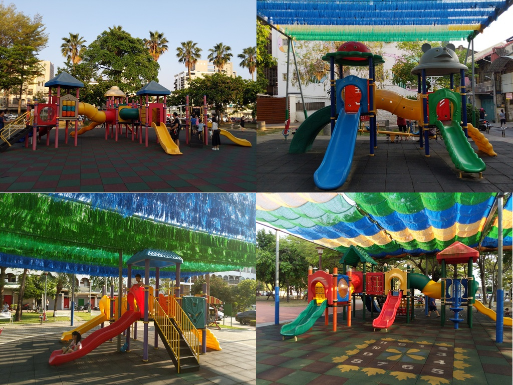
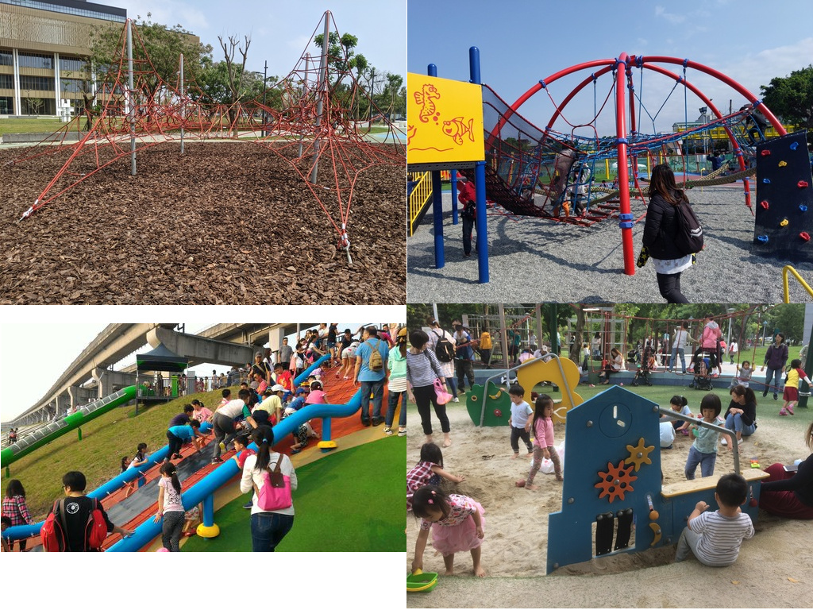

特色、共融與公園
江明宗 @ 疫情新生活 民眾糾察隊 2021-08-19

這是公園

這也是公園
台南有近 500 個公園
338 個公園有遊戲場
大部分都罐頭遊具
廉價
千篇一律
缺乏挑戰性
為什麼，
台南也要特色公園？
要把孩子拉出來
為什麼，共融？
共融遊具
範例取自 https://www.slideshare.net/ssuser89c166/ss-72220509
台北教育局
台北公園處
台北水利處
身心障礙孩童能夠一起玩
大人孩子能夠一起玩
老人小孩能夠一起玩
大家都能夠一起玩
是的，花錢、花時間
2020 年
粗出生率 7.01‰
粗死亡率 7.34‰
人口負成長
你我的未來，
也快要沒錢、沒時間
支持特色公園
也是支持台灣的未來
台南也要特色公園
Q&A